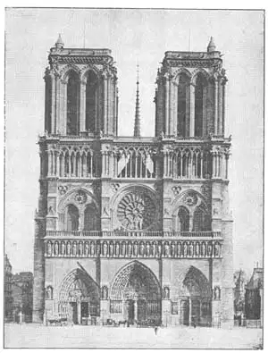
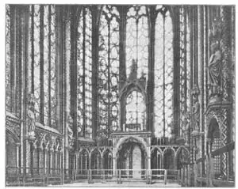

74
IN PRAISE OF MARY
赞美玛利亚的建筑物

BIG buildings nowadays take only months to build. Big Gothic buildings often took hundreds of years to build. One Gothic building, Cologne Cathedral, took more than six hundred years.
The most important Gothic buildings were the cathedrals. When “Gothic” is mentioned, most people think of France, for France has some of the finest Gothic cathedrals in the world.
The Gothic cathedrals were built with loving care. Every one in the village and the surrounding country did his bit for the cathedral. The stones were shaped and set in place by the members of the gilds, which were clubs of workman. The gild would not let any work pass that was not good work. There was nothing “fake” about a cathedral. The stone carvings’ way up in the roof were just as carefully made as if people could get near enough to examine them.
Perhaps this is why the Gothic cathedrals rate next to the Greek buildings as the world’s most wonderful examples of architecture. The men who built the Greek temples and the men who built the Gothic cathedrals left behind them very different kinds of architecture. But they were alike in the honesty of their work.
Most of the French Gothic cathedrals were built to the glory of Mary, the mother of Christ, who in French was called Notre Dame— Our Lady. There were so many cathedrals of Notre Dame built that we generally call the cathedral simply by the name of the town it is in, such as Chartres or Rheims. But if anybody speaks of just the Cathedral of Notre Dame, he usually means Notre Dame of Paris.
Notre Dame of Paris has on the west end—the end opposite the altar—two large towers. Beneath the towers and in the center are the doorways, one to the nave and one to each side aisle. The doorways are covered with rows of statues of prophets and saints, the head of one statue below the feet of another. Above each doorway is a row of very large statues of kings. Above the kings is a huge round window called a wheel window or rose window. The rose window is filled with brilliant colored pieces of glass that cast a soft purplish glow inside the church.
This cathedral in Paris is in the form of a Latin cross. Almost all the Gothic churches are. The arms of the cross are called the transepts of the cathedral. The place where the transepts cross the nave is called the crossing. Over the crossing was built a tall slender spire. You can see this spire between the towers in the picture.
The front of a building, like the front of Notre Dame which you see in the picture, is called the facade . Facade means about the same thing as face. Now, Notre Dame of Paris is supposed to have the finest facade of any Gothic cathedral in the world. In fact, each of the great cathedrals of France has some part that is considered the best in the world. What a building it would make if the best of each cathedral were taken and all the bests put together to make one best cathedral! But perhaps such a building wouldn’t be as interesting, after all, as the separate cathedrals. There is such a thing as being too good.
The towers with their square tops on the cathedral of Paris were meant to have tall spires on them. But by the time the cathedral was ready for the spires, so many years had gone by that the spires were never built. On some cathedrals one tower was built and the other never finished. On one very fine cathedral the spires were put on at different times, so that they are not alike. This is the famous Cathedral of Chartres.

No.74-1 FACADE OF NOTRE DAME, PARIS（巴黎圣母院正面）
Chartres is a little city about sixty miles from Paris. The Cathedral of Chartres is noted not only for its two spires but for the wonderful stained glass windows in its walls. You remember I told you that Gothic churches had walls of glass. This glass was made in brilliant color to show Bible pictures. The sunlight streaming through the colored glass has a marvelously beautiful effect on the interior. Instead of the glass of Chartres Cathedral, however, I’m going to show you a picture of the interior of a church in Paris called the Sainte Chapelle so you can see how much of the wall space is glass. The stone parts, as you can see, are hardly more than a framework for whole walls of glass.
The glass was held by stone framework in the windows, and the separate pieces of glass were kept in place with strips of lead. The stone framework holding the glass in the windows is called tracery.

No.74-2 INTERIOR OF SAINTE CHAPELLE, PARIS（巴黎圣礼拜堂内景）
Potograph by Ewing Galloway
As new Gothic cathedrals were built, the tracery was made in different shapes. Often the shapes of the tracery is a good way to tell in what period the cathedral was built.
Rheims Cathedral is thought to have the best portals or doorways. It also is famous for its proportion or shape as a whole building. And many of the carved stone statues that are all over the building are famous. Unfortunately this beautiful cathedral was in the fighting area during World War I and the German shells that struck it damaged it terribly. After the war the damage was repaired as carefully as possible, so that Rheims looks almost the same as before.
Fortunately this cathedral could be repaired, but many of the beautiful buildings of the past have been destroyed in wars or so badly damaged that they could not be repaired. The wonderful Parthenon, you remember, was blown up by an explosion during a war.
The best Gothic nave is thought by many to be the nave of the cathedral at Amiens. So now let’s see what we have best from these cathedrals:
The facade of Paris The nave of Amiens
The doorways of Rheims The statues of Rheims
The spires and glass of Chartres
Northern France has many Gothic buildings. Almost every town has its Gothic church or cathedral. The cathedrals were built to the glory of God and all the people added what they could to the glory of the church. All the art of the Middle Ages was found there. Paintings and stained glass, sculpture and architecture, music and tapestry, jewels and precious metals for the altar—all were part of these great buildings or of the religious services held in them. So suited for a church is the soaring Gothic style that even to-day many people think that no style of building is better for our modern churches than the Gothic.
【中文阅读】
如今的大型建筑物只需几个月就能建造好，但大型的哥特式建筑物却需要花费好几百年的时间才能完工。科隆大教堂花费了六百多年的时间才建成。
最重要的哥特式建筑物是大教堂。提到“哥特式”建筑，大多数人都会想到法国，因为法国有几座世界上最著名的哥特式大教堂。
哥特式大教堂是用“爱心”构筑的。教堂所在村庄的每一个村民以及周边的乡村都为大教堂的建造出人出力。行会成员负责加工并砌放石块，这些人来自各种工人俱乐部。行会不容许任何不合格的操作。大教堂毫无“掺假”。天顶上的石刻做工精细，好像就是为了迎接人们前来检查。
这也许就是为什么在最美观的建筑排名上，哥特式大教堂仅次于希腊建筑物的原因吧。那些建造希腊神庙和哥特式大教堂的人留给人类的建筑物虽然各自的风格不 同，但他们对建筑工作那一丝不苟的态度都是一样的。
法国大部分哥特式大教堂都是为了纪念玛利亚——基督的母亲而建造的。法国人称她圣母玛利亚——我们称她耶稣的母亲。法国建造了许多圣母大教堂，而我们一般都以教堂所在的城镇命名，譬如沙特尔大教堂和兰斯大教堂。但如果人们单指圣母玛利亚大教堂，那他们通常指的是巴黎圣母院。
巴黎圣母院的西端——对应祭坛的那端——有两座巨塔。塔底部的正中央是门道，一个通向中殿，一个通向两边的走廊。门道两边布满了一排排先知和圣徒的雕像，每尊雕像都要比它前面的矮一英尺。门道的上方是一排造型比较大的国王雕像。国王雕像的上方有一扇圆形大窗户，叫做轮形扇窗或玫瑰花窗。花窗上镶满了闪亮的彩色玻璃片，使紫色的柔和光影投在教堂里。
巴黎的这座大教堂呈拉丁十字形状。几乎所有的哥特式建筑物都呈这种形状。十字形上的臂叫做大教堂的“翼”。这翼穿过教堂中殿的那个部分叫做“岔口”。岔口的上部是细细高高的尖塔。从图上你可以看到双塔间的尖塔。
建筑物的前面，正如你在图上所看到的圣母院的正面，叫做正门。正门意味着像脸面一样的东西。如今的巴黎圣母院被认为拥有世界上哥特式大教堂最美观的正面。实际上，法国的任何一座大教堂都在某一方面处于世界的领先地位。如果把每座大教堂的精华部分都吸取来，集中建造一座最好的大教堂，那这座大教堂该有多壮观啊！不过这样的教堂也许终究没有其他单个的教堂那样有趣。太过完美也是一种遗憾。
巴黎圣母院的双塔顶部呈方形，意味着上面还要再加尖顶。但等到大教堂已准备好能加尖顶时，已经过去许多年了，尖顶依然没有加上。有些大教堂在建好一座塔后，另外一座塔却没能竣工。在每一座精致的大教堂上，尖顶的放置时间各有不同，所以它们看起来就不会相同。著名的沙特尔大教堂就是这样。
沙特尔是离巴黎六十英里远的一座小城。沙特尔大教堂不但因其两座尖塔而闻名遐迩，更因其镶嵌在墙壁上绚丽的染色玻璃窗而为人所知。还记得吗，我曾说过哥特式教堂都有玻璃墙。色彩斑斓的玻璃墙用图画展示《圣经》故事。阳光穿过彩色玻璃窗，使教堂内部顿时产生了奇异美妙的效果。然而，除了沙特尔大教堂的玻璃墙，我还要向你展示一幅关于巴黎一座教堂内部的图画，这座教堂叫做“圣礼拜堂”，这样你就可以清楚地看到墙壁上有多大面积是玻璃制成的。石墙部分的面积非常少，正如你所看到的那样，除了固定玻璃而用的窗格外，几乎都是玻璃墙。
这些玻璃是由窗户上的石质框架固定的，而墙壁上的片片玻璃却是靠铅条固定。固定窗玻璃的框架叫做“花式窗格”。
新型哥特式大教堂的花式窗格形态各异。通过花式窗格的形状，我们可以推断出大教堂建造的年代。
兰斯大教堂被认为拥有最好的大门或门道。同时也因其整体的比例协调，形态优雅而闻名于世。充满教堂的许多石雕也非常有名。不幸的是，这座漂亮的大教堂正好位于第一次世界大战的主战区内，德军的炮弹正好击中教堂，使它严重受损。战后对受损的教堂进行了精心的修复，才使兰斯大教堂总体看上去跟战前的样子差不多。
幸运的是，这座大教堂还能得以重建，但是过去许多漂亮的建筑物都在战争中被摧毁得面目全非，根本就不能修复。还记得壮观的帕台农神庙吧？它在一次战火中被炸毁了。
亚眠大教堂的中殿被认为是世界上最优秀的哥特式中殿。让我们来看看以下的大教堂哪个部分最好：
巴黎圣母院的正门 亚眠大教堂的中殿
兰斯大教堂的门道 兰斯大教堂的雕像
沙特尔大教堂尖塔和玻璃
法国的北部有许多哥特式建筑物。几乎每个城镇都有哥特式教堂或大教堂。大教堂是为荣耀上帝而建，人人都在上面加了一点东西，以荣耀上帝。在这里可以找到中世纪所有派别的艺术。油画、玻璃彩画、雕像、建筑、音乐、挂毯、珠宝，以及用于祭坛上的珍贵金属——这一切都成了伟大建筑或宗教仪式的组成部分。直到如今许多人甚至认为那直耸云霄、最适合建造教堂的哥特式建筑风格是最适合建造现代教堂的。